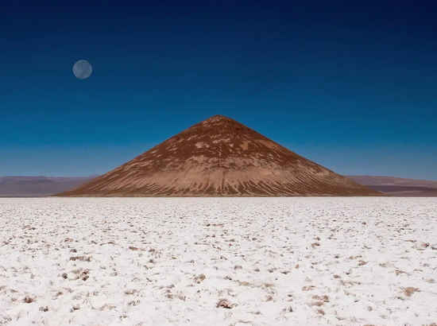

Près de la bordure Sud du Salar d’Arizaro, le sixième plus grand lac de sel sur terre et le deuxième plus important en Argentine, à 70 km du village de Tolar Grande, se trouve une pyramide volcanique étrange. Un cône presque parfait, qui s’élève de manière inattendue au milieu de cette cuvette de sel. Il s’agit du Cono de Arita qui se profile majestueusement 122 mètres au-dessus du Salar. Son nom vient du langage Aymara où Arita signifie « pointu » ou « effilé ».
Ce cône se trouve à 3590 m d’altitude dans la province de Salta.
Au début du XXème siècle, il a été considéré qu’un cône si parfait ne pouvait être construit que par l’Homme. Mais le Cono de Arita est naturel et on suppose qu’il soit un petit volcan qui ait manqué de force pour éclater à travers la croûte et n’a donc jamais laissé exploser de lave ou développé un cratère. Tout autour du cône, on trouve du sel noir, ramené à la surface par le magma des anciennes coulées souterraines. Selon les vestiges archéologiques trouvés dans le cône, l’endroit était un centre de cérémonie avant l’arrivée des Incas.
Le cône noir, qui doit sa couleur à la lave qui le compose, contraste fortement avec l’étendue blanche du Salar d’Arizaro. Du chemin par lequel on l’atteint, il semble que le Cono de Arita soit tout près, mais il faut marcher 1 km pour atteindre sa base.